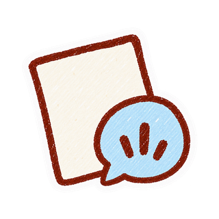
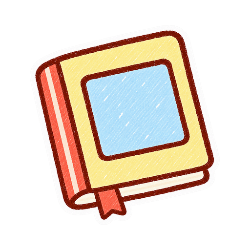

Chaque dessin raconte une histoire.
Garder ses dessins
Photographiez les petits mondes sur le papier.

Écouter ses histoires
Gardez ce que votre enfant raconte, avec sa propre voix.

En faire un livre
Réunissez dessins et histoires dans un livre d’anniversaire.